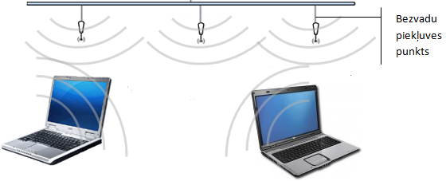

Datortīkls (network) jeb tīkls ir datoru un ar tiem saistīto ierīču grupa, kas savstarpēji savienotas ar sakaru kanāliem un kas nodrošina datņu un citu resursu kopīgas izmantošanas iespējas (resource sharing) vairākiem lietotājiem.
Lokālais tīkls (Local Area Network – LAN) ir datoru tīkls, kas izvietots nelielā teritorijā un atrodas lietotāja pārziņā. Lokālais tīkls sastāv no sakaru līnijām, kas savieno personālos datorus un citas elektroniskās koplietošanas iekārtas, piemēram, printerus un datu glabāšanas ierīces.
Lai savienotu lokālā tīkla datorus, visbiežāk izmanto vadus un centrmezglu (hub) vai komutatoru (switch), kas izpilda dažādu ierīču kopīga savienojuma punkta funkcijas.

Teritoriālais tīkls (Wide Area Network – WAN) ir datoru tīkls, kas savieno attālus lietotājus, kuri var atrasties citās pilsētās vai valstīs un kuri parasti izmanto vispārējās lietošanas vai speciālus sakaru līdzekļus.
Teritoriālajā datortīklā parasti ietilpst daudzi lokālie tīkli vai to grupas. Kā šāda tīkla piemēru var minēt intertīklu jeb internetu (internet).

Bezvadu (wireless) tīkls ir jebkura veida datortīkls, kas nodrošina datu apmaiņu starp datoriem bez vadu palīdzības.
